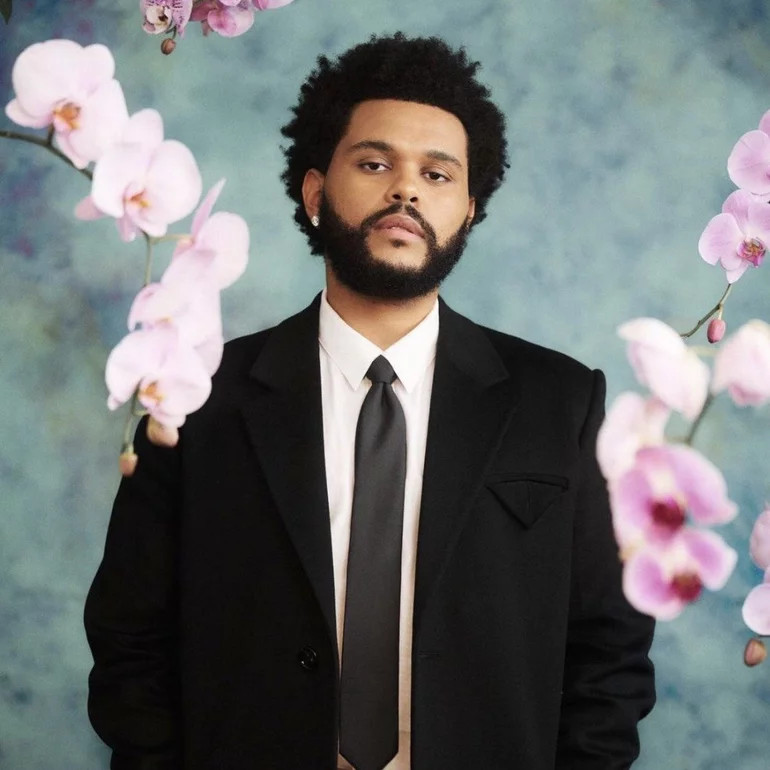

Biografía de The Weeknd: Abel Makkonen Tesfaye
¿Quién es The Weeknd?
Abel Makkonen Tesfaye, quien se hace llamar en el medio artístico The Weeknd, es un cantante, compositor y productor canadiense de origen etíope, nacido en Toronto, Ontario, Canadá, el 16 de febrero de 1990. En 2010 se da a conocer en la escena musical tras lanzar una serie de sencillos en YouTube de manera anónima; también a partir del éxito con canciones como "Call Out My Name", "The Hills" y "Starboy".
Significado del nombre
En sus inicios el cantante era conocido como Tesfaye, luego hace el cambio a The Weeknd. El nombre artístico The Weeknd, en español "Fin de semana", se deriva de su experiencia al abandonar la secundaria a la edad de 17 años, cuando él y un compañero de clases dejaron la escuela un fin de semana y nunca regresaron. La ortografía se modificó para evitar diatribas legales con una banda canadiense llamada precisamente 'The Weekend'.
Niñez, Juventud y Vida Familiar
The Weeknd es hijo de Makkonen y Samra Tesfaye, una pareja de emigrantes etíopes que llegaron a Canadá en los pasados años ochenta. El niño fue criado en una familia de bajos recursos socio económicos, su madre trabajó en varios sitios para aportar al sustento de la familia y, dado que el padre abandonó el hogar, su abuela materna se encargó del cuidado de él. En su adolescencia el futuro cantante consumió marihuana, además de otras drogas muchos más fuertes. Asistió a las escuelas West Hill Collegiate Institute y Birchmount Park Collegiate Institute, aunque nunca obtuvo un título.
Inicios de The Weeknd en la Música
En 2010, cuando todavía era reconocido como Tesfaye, The Weeknd se inició en el mundo musical tras subir, de manera anónima, varias canciones a YouTube. Al año siguiente estrenó tres mixtapes, titulados "House of Balloons", "Thursday" y "Echoes of Silence", que en poco tiempo se convirtieron en éxitos. Más adelante, con un camino recorrido, The Weeknd estrenó su primer trabajo recopilatorio "Trilogy", que contiene treinta pistas remasterizadas de sus mixtapes, además de un par de piezas nuevas.
Género musical
El género musical que identifica a The Weeknd es el R&B. También ha experimentado con pop, hip hop y pop fussion; además de incorporar indie y música electrónica. Su trabajo musical también se ha etiquetado como R&B alternativo.
Trayectoria y Legado
A finales de 2010, después de editar una serie de temas como Tesfaye, publicó los sencillos "What You Need", "Loft Music" y "The Morning", con los cuales se dio a conocer oficialmente como The Weeknd. Tras obtener reconocimiento con esos últimos estrenos, The Weeknd realizó su primera actuación en el Mod Club de Toronto. Asimismo, colaboró con Drake en el álbum multi-platino "Take Care". Durante 2011 The Weeknd estrenó, a través de su página web, varios mixtape que puso a circular de manera gratuita; así, en marzo lanzó "House of Balloons", contentivo de nueve pistas. Luego, en agosto, editó un segundo mixtape, "Thursday", también con descarga digital gratuita desde el sitio web de The Weeknd. Un tercer mixtape, "Echoes of Silence", fue publicado de igual modo en diciembre. Un conjunto de esos tres trabajos, denominado "Balloons Trilogy, salió al mercado en noviembre de 2012. En ese mismo año 2012 el artista realizó una gira de conciertos que lo llevó a Estados Unidos, España, Portugal, Inglaterra, Francia, Bruselas, entre otros países. Cabe mencionar que en su estadía en Londres, Inglaterra, The Weeknd interpretó una versión de "Dirty Diana", de Michael Jackson. Más adelante el artista firmó un contrato con la disquera Republic Records; en conjunto con su propia compañía, "XO". En septiembre de 2013 el cantante estrenó un sencillo, homónimo, incluido en el álbum Kiss Land". También participó en el tour de Drake, donde promovió las canciones "Belong to the World" y "Live For". Ademas, logró el número dos en la lista Billboard 200 de los Estados Unidos, al vender 96 mil copias a la primera semana del estreno. En ese mismo año formó parte de la banda sonora de "Los Juegos del Hambre: En llamas", al interpretar "Devil May Cry"; además de participar en "Elastic Heart", de Sia. The Weeknd, todavía un cantante con una trayectoria moderada, logró participar en seis shows junto a Justin Timberlake en su "The 20/20 Experience World Tour", realizado en noviembre de 2013. A su vez, en febrero del año siguiente, hizo la versión remix del sencillo de Beyoncé, "Drunk in Love"; el trabajo fue más que un cover, debido a que The Weeknd ajustó el ritmo para encajar mejor su versión de la historia. Más tarde, sin tener descanso alguno, The Weeknd anunció, un día después de lanzar su nueva canción "Often" en SoundCloud, una corta gira por Estados Unidos durante ese mismo año 2014; los cantantes ScHoolboy Q y Jhené Aiko fueron confirmados como apoyo. Por esa misma época el cantante colaboró con Ariana Grande en el sencillo "Love Me Harder; la pieza se situó en el número siete de la lista Billboard Hot 100. El artista dio a conocer, en mayo de siguiente año, un vídeo musical de su sencillo "The Hills", fue lanzado en formato de descarga digital; igual que el primer sencillo del álbum de estudio titulado "Chapter III". Cabe destacar que varias piezas del álbum se filtraron a Internet, entre ellas "Can't Feel My Face". The Weeknd estuvo en los primeros lugares de la lista Hot R&B Songs de Billboard para la semana del 25 de julio de 2015; se convirtió así en el primer artista en la historia de dicha lista en lograr tan distinguida posición. The Weeknd, merecedor de puestos privilegiados en reconocidas listas digitales, lanzó su segundo álbum de estudio "Beauty Behind The Madness" en agosto de 2015. El disco se ubicó en la cima del Billboard 200 en sus primeras semanas, con un aproximado de 412 mil unidades vendidas. El artista encabezó la promoción de su álbum con carteles en los festivales musicales de verano, incluido Lollapalooza en Chicago, el Hard Summer Music Festival en Pomona, el Summer Set Music and Camping Festival en Somerset, Philadelphia's Made in America Festival, Austin City Limits en Austin y Seattle's Bumbershoot Festival. "Beauty Behind The Madness" fue calificado como el disco con más reproducciones en streaming de 2015, con más de 60 millones de oyentes. Además, se ubicó en la quinta posición de la lista de los 50 mejores álbumes de la revista Rolling Stone. Después de los exitosos resultados con su segundo disco, The Weeknd anunció su siguiente gira con la colaboración de Travis Scott, Banks y Halsey. Por ese tiempo el artista se convirtió en el primer cantante masculino, en siete años, con dos canciones en los Billboard Hot 100. The Weeknd fue invitado a Saturday Night Live, show conducido por la actriz Amy Schumer; fue su primera actuación en el show como solista. En ese mismo período hizo el anuncio de su nuevo álbum, "Starboy", con la colaboración del dúo francés de música electrónica Daft Punk, el disco recibió certificación platino; además, alcanzó el número uno en Estados Unidos, y en varios otros países. También en esa época The Weeknd estrenó un cortometraje de 12 minutos, titulado M A N I A, dirigido por Grant Singer. Adicionalmente, editó su sexto álbum de estudio de Future, que resultó todo un éxito; y entre otras actividades, colaboró con Lana Del Rey. The Weeknd continúa con su carrera artística, así, el mismo día de su estreno dio a conocer su más reciente disco: "My Dear Melancholy".
Datos Personales
- Nombre Verdadero: Abel Makkonen Tesfaye
- Nombre Artístico: The Weeknd
- Fecha de Nacimiento: 16 de febrero de 1990 (Edad: 33)
- Nacionalidad: Canadiense
- Ascendencia: Etíope
- Donde Nació: Toronto, Ontario, Canadá
- Donde Vive: Canadá
- Género(s): R&B contemporáneo, hip hop
- Actividad: 2010 - Actualidad
- Instrumentos: Voz, teclado
- Ocupación: Cantante, productor discográfico
- Disquera(s): XO Records, Republic Records, Universal Republic Records
- Cónyuge/Pareja: Selena Gómez (2017 - 2017); Bella Hadid (2015 - 2016) - (2018 - 2019)
- Padres: Makkonen y Samra Tesfaye
- Tipo de voz: Contratenor
- Página Oficial: www.theweeknd.com